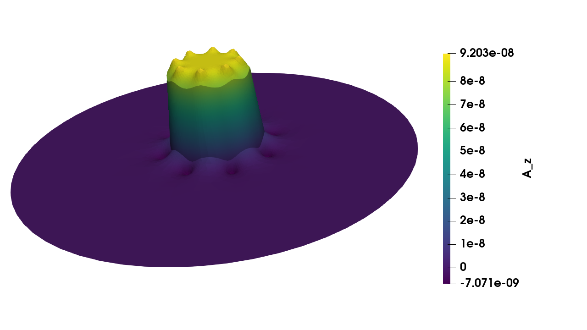

Electromagnetics example¶
Authors: Hans Petter Langtangen and Anders Logg
Figure by: Jørgen S. Dokken
In this example, we will consider an iron cylinder with copper wires wound around the cylinder, as shown below

Through the copper wires a static current of \(J=1A\) is flowing. We would like to compute the magnetic field \(B\) in the iron cylinder, the copper wires, and the surrounding vaccum.
We start by simplifying the problem to a 2D problem. We can do this by assuming that the cylinder extends far along the z-axis and as a consequence the field is virtually independent of the z-coordinate. Next, we consder Maxwell’s equation to derive a Poisson equation for the magnetic field (or rather its potential)
Here, \(D\) is the displacement field, \(B\) is the magnetic field, \(E\) is the electric field, and \(H\) is the magnetizing field. In addition to Maxwell’s equation, we need a constitutive relation between \(B\) and \(H\),
which holds for an isotropic linear magnetic medium. Here, \(\mu\) is the magnetic permability of the material. Now, since \(B\) is solenodial (divergence free) accoording to Maxwell’s equations, we known that \(B\) must be the curl of some vector field \(A\). This field is called the magnetic vector potential. Since the problem is static and thus \(\frac{\partial D}{\partial t}=0\), it follows that
In the last step, we have expanded the second derivatives and used the gauge freedom of \(A\) to simplify the equations to a simple vector-valued Poisson equation for the magnetic vector potential; if \(B=\nabla \times A\), then \(B=\nabla \times (A+\nabla \phi)\) for any scalar field \(\phi\) (the gauge function). For the current problem, we thus need to solve the following 2D Poisson problem for the \(z\)-component \(A_z\) of the magnetic vector potential
Since we cannot solve the problem on an infinite domain, we will truncate the domain using a large disk, and set \(A_z=0\) on the boundary. The current \(J_z\) is set to \(+1\)A in the interior set of the circles (copper-wire cross sections) and to \(-1\) A in the exteriror set of circles in the cross section figure. Once the magnetic field vector potential has been computed, we can compute the magnetic field \(B=B(x,y)\) by
The weak formulation is easily obtained by multiplication of a test function \(v\), followed by integration by parts, where all boundary integrals vanishes due to the Dirichlet condition, we obtain \(a(A_z,v)=L(v)\) with
Meshing a complex structure with subdomains¶
Author: Jørgen S. Dokken
We create the domain visualized in the cross section figure above using gmsh. Note that we are using the gmsh.model.occ.fragment commands to ensure that the boundaries of the wires are resolved in the mesh.
import gmsh
import numpy as np
from mpi4py import MPI
rank = MPI.COMM_WORLD.rank
gmsh.initialize()
r = 0.1 # Radius of copper wires
R = 5 # Radius of domain
a = 1 # Radius of inner iron cylinder
b = 1.2 # Radius of outer iron cylinder
N = 8 # Number of windings
c_1 = 0.8 # Radius of inner copper wires
c_2 = 1.4 # Radius of outer copper wires
gdim = 2 # Geometric dimension of the mesh
if rank == 0:
# Define geometry for iron cylinder
outer_iron = gmsh.model.occ.addCircle(0, 0, 0, b)
inner_iron = gmsh.model.occ.addCircle(0, 0, 0, a)
gmsh.model.occ.addCurveLoop([outer_iron], 5)
gmsh.model.occ.addCurveLoop([inner_iron], 6)
iron = gmsh.model.occ.addPlaneSurface([5, 6])
gmsh.model.occ.synchronize()
# Define geometry for background
background = gmsh.model.occ.addDisk(0, 0, 0, R, R)
gmsh.model.occ.synchronize()
# Define the copper-wires inside iron cylinder
angles_N = [i*2*np.pi/N for i in range(N)]
wires_N = [(2, gmsh.model.occ.addDisk(c_1*np.cos(v), c_1*np.sin(v), 0, r, r)) for v in angles_N]
# Define the copper-wires outside the iron cylinder
angles_S = [(i+0.5)*2*np.pi/N for i in range(N)]
wires_S = [(2, gmsh.model.occ.addDisk(c_2*np.cos(v), c_2*np.sin(v), 0, r, r)) for v in angles_S]
gmsh.model.occ.synchronize()
# Resolve all boundaries of the different wires in the background domain
all_surfaces = [(2, iron)]
all_surfaces.extend(wires_S)
all_surfaces.extend(wires_N)
whole_domain = gmsh.model.occ.fragment([(2, background)], all_surfaces)
gmsh.model.occ.synchronize()
# Create physical markers for the different wires.
# We use the following markers:
# - Vacuum: 0
# - Iron cylinder: 1
# - Inner copper wires: $[2,3,\dots,N+1]$
# - Outer copper wires: $[N+2,\dots, 2\cdot N+1]
inner_tag = 2
outer_tag = 2 + N
background_surfaces = []
other_surfaces = []
for domain in whole_domain[0]:
com = gmsh.model.occ.getCenterOfMass(domain[0], domain[1])
mass = gmsh.model.occ.getMass(domain[0], domain[1])
# Identify iron circle by its mass
if np.isclose(mass, np.pi*(b**2-a**2)):
gmsh.model.addPhysicalGroup(domain[0], [domain[1]], tag=1)
other_surfaces.append(domain)
# Identify the background circle by its center of mass
elif np.allclose(com, [0, 0, 0]):
background_surfaces.append(domain[1])
# Identify the inner circles by their center of mass
elif np.isclose(np.linalg.norm(com), c_1):
gmsh.model.addPhysicalGroup(domain[0], [domain[1]], inner_tag)
inner_tag +=1
other_surfaces.append(domain)
# Identify the outer circles by their center of mass
elif np.isclose(np.linalg.norm(com), c_2):
gmsh.model.addPhysicalGroup(domain[0], [domain[1]], outer_tag)
outer_tag +=1
other_surfaces.append(domain)
# Add marker for the vacuum
gmsh.model.addPhysicalGroup(2, background_surfaces, tag=0)
# Create mesh resolution that is fine around the wires and
# iron cylinder, coarser the further away you get
gmsh.model.mesh.field.add("Distance", 1)
edges = gmsh.model.getBoundary(other_surfaces)
gmsh.model.mesh.field.setNumbers(1, "EdgesList", [e[1] for e in edges])
gmsh.model.mesh.field.add("Threshold", 2)
gmsh.model.mesh.field.setNumber(2, "IField", 1)
gmsh.model.mesh.field.setNumber(2, "LcMin", r / 2)
gmsh.model.mesh.field.setNumber(2, "LcMax", 5 * r)
gmsh.model.mesh.field.setNumber(2, "DistMin", 2 * r)
gmsh.model.mesh.field.setNumber(2, "DistMax", 4 * r)
gmsh.model.mesh.field.setAsBackgroundMesh(2)
# Generate mesh
gmsh.option.setNumber("Mesh.Algorithm", 7)
gmsh.model.mesh.generate(gdim)
As in the Navier-Stokes tutorial we load the mesh directly into dolfin-X, without writing it to file. This time, we create MeshTags for the physical cell data.
from dolfinx.io import extract_gmsh_geometry, extract_gmsh_topology_and_markers, ufl_mesh_from_gmsh
from dolfinx.cpp.io import perm_gmsh, extract_local_entities
from dolfinx.cpp.mesh import to_type, cell_entity_type
from dolfinx.cpp.graph import AdjacencyList_int32
from dolfinx.mesh import create_meshtags, create_mesh
if rank == 0:
# Get mesh geometry
x = extract_gmsh_geometry(gmsh.model)
# Get mesh topology for each element
topologies = extract_gmsh_topology_and_markers(gmsh.model)
# Get information about each cell type from the msh files
num_cell_types = len(topologies.keys())
cell_information = {}
cell_dimensions = np.zeros(num_cell_types, dtype=np.int32)
for i, element in enumerate(topologies.keys()):
properties = gmsh.model.mesh.getElementProperties(element)
name, dim, order, num_nodes, local_coords, _ = properties
cell_information[i] = {"id": element, "dim": dim, "num_nodes": num_nodes}
cell_dimensions[i] = dim
# Sort elements by ascending dimension
perm_sort = np.argsort(cell_dimensions)
# Broadcast cell type data and geometric dimension
cell_id = cell_information[perm_sort[-1]]["id"]
tdim = cell_information[perm_sort[-1]]["dim"]
num_nodes = cell_information[perm_sort[-1]]["num_nodes"]
cell_id, num_nodes = MPI.COMM_WORLD.bcast([cell_id, num_nodes], root=0)
cells = topologies[cell_id]["topology"]
cell_values = topologies[cell_id]["cell_data"]
else:
cell_id, num_nodes = MPI.COMM_WORLD.bcast([None, None], root=0)
cells, x = np.empty([0, num_nodes]), np.empty([0, gdim])
cell_values = np.empty((0,))
gmsh.finalize()
WARNING:py.warnings:/usr/local/lib/python3.8/dist-packages/numpy/ctypeslib.py:521: RuntimeWarning: A builtin ctypes object gave a PEP3118 format string that does not match its itemsize, so a best-guess will be made of the data type. Newer versions of python may behave correctly.
return array(obj, copy=False)
We now distribute the mesh over multiple processors
# Create distributed mesh
ufl_domain = ufl_mesh_from_gmsh(cell_id, gdim)
gmsh_cell_perm = perm_gmsh(to_type(str(ufl_domain.ufl_cell())), num_nodes)
cells = cells[:, gmsh_cell_perm]
mesh = create_mesh(MPI.COMM_WORLD, cells, x[:, :gdim], ufl_domain)
tdim = mesh.topology.dim
local_entities, local_values = extract_local_entities(
mesh, tdim, cells, cell_values)
mesh.topology.create_connectivity(tdim, 0)
adj = AdjacencyList_int32(local_entities)
ct = create_meshtags(mesh, tdim, adj, np.int32(local_values))
To inspect the mesh, we use Paraview, and obtain the following mesh
import dolfinx.io
with dolfinx.io.XDMFFile(MPI.COMM_WORLD, "mt.xdmf", "w") as xdmf:
xdmf.write_mesh(mesh)
xdmf.write_meshtags(ct)
Next, we define the discontinous functions for the permability \(\mu\) and current \(J_z\) using the MeshTags as in Defining material parameters through subdomains
Q = dolfinx.FunctionSpace(mesh, ("DG", 0))
material_tags = np.unique(ct.values)
mu = dolfinx.Function(Q)
J = dolfinx.Function(Q)
with mu.vector.localForm() as loc_mu, J.vector.localForm() as loc_J:
# As we only set some values in J, initialize all as 0
loc_J.set(0)
for tag in material_tags:
cells = ct.indices[ct.values==tag]
num_cells = len(cells)
# Set values for mu
if tag == 0:
mu_ = 4 * np.pi*1e-7 # Vacuum
elif tag == 1:
mu_ = 1e-5 # Iron (This should really be 6.3e-3)
else:
mu_ = 1.26e-6 # Copper
loc_mu.setValues(cells, np.full(num_cells, mu_))
# Set values for J
if tag in range(2, 2+N):
loc_J.setValues(cells, np.full(num_cells, 1))
elif tag in range(2+N, 2*N + 2):
loc_J.setValues(cells, np.full(num_cells, -1))
In the code above, we have used a somewhat less extreme value for the magnetic permability of iron. This is to make the solution a little more interesting. It would otherwise be completely dominated by the field in the iron cylinder.
We can now define the weak problem
import ufl
V = dolfinx.FunctionSpace(mesh, ("CG", 1))
u_bc = dolfinx.Function(V)
with u_bc.vector.localForm() as bc_loc:
bc_loc.set(0)
facets = dolfinx.mesh.locate_entities_boundary(mesh, tdim-1, lambda x: np.full(x.shape[1], True))
dofs = dolfinx.fem.locate_dofs_topological(V, tdim-1, facets)
bc = dolfinx.DirichletBC(u_bc, dofs)
u = ufl.TrialFunction(V)
v = ufl.TestFunction(V)
a = (1 / mu) * ufl.dot(ufl.grad(u), ufl.grad(v)) * ufl.dx
L = J * v * ufl.dx
We are now ready to solve the linear problem
A_z = dolfinx.Function(V)
problem = dolfinx.fem.LinearProblem(a, L, u=A_z, bcs=[bc])
problem.solve()
Coefficient(FunctionSpace(Mesh(VectorElement(FiniteElement('Lagrange', triangle, 1), dim=2), 0), FiniteElement('Lagrange', triangle, 1)), 7)
As we have computed the magnetic potential, we can now compute the magnetic field, by setting B=curl(A_z). Note that as we have chosen a function space of first order piecewise linear function to describe our potential, the curl of a function in this space is a discontinous zeroth order function (a function of cell-wise constants). However, to simplify the visualization, we project the curl into a first order continous function space
W = dolfinx.VectorFunctionSpace(mesh, ("CG", 1))
p = ufl.TrialFunction(W)
q = ufl.TestFunction(W)
a_w = ufl.inner(p, q) * ufl.dx
L_w = ufl.inner(ufl.as_vector((A_z.dx(1), -A_z.dx(0))), q) * ufl.dx
projection = dolfinx.fem.LinearProblem(a_w, L_w)
B = projection.solve()
Note that we used ufl.as_vector to interpret the Python-tuple (A_z.dx(1), -A_z.dx(0)) as a vector in the unified form language (UFL).
We now plot the magnetic potential \(A_z\) and the magnetic field \(B\)
import dolfinx.plotting
import matplotlib.pyplot as plt
plt.figure(figsize=(12, 12))
c = dolfinx.plotting.plot(A_z, title="Magentic potential")
dolfinx.plotting.plot(mesh, color="k", linewidth = 0.4)
plt.colorbar(c)
<matplotlib.colorbar.Colorbar at 0x7ff4c16971c0>
As it is easier to visualize vector fields in Paraview, we write our output to XDMFFile
with dolfinx.io.XDMFFile(MPI.COMM_WORLD, "em.xdmf", "w") as xdmf:
xdmf.write_mesh(mesh)
A_z.name = "A_z"
xdmf.write_function(A_z)
B.name = "B"
xdmf.write_function(B)
For instance, we visualize the potential by using the Warp by Scalar source to obtain
